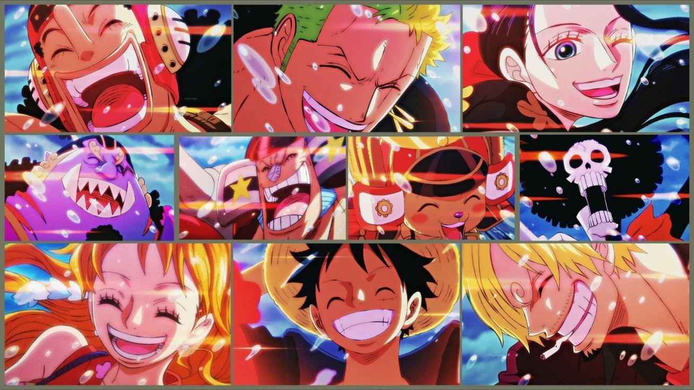

"BLUE LOCK" é um anime esportivo que segue jovens atacantes em um intenso programa de treinamento. Com o objetivo de criar o melhor atacante do mundo, eles competem entre si em desafios implacáveis que testam suas habilidades e mentalidade.



"One Piece" é um anime de aventura que acompanha Monkey D. Luffy e sua tripulação em busca do lendário tesouro One Piece. Com o sonho de se tornar o Rei dos Piratas, Luffy enfrenta desafios, faz amigos e explora o mundo perigoso de Grand Line.